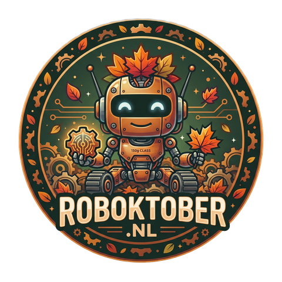
[3.1 · 0:00–0:30] COLD OPEN — large Roboktober logo on screen. Drive the robot by phone on a bounded surface. Do not push objects off the table or towards the audience.
Only then: "Good evening, I'm Rein." → next slide.
From joystick to wheel
From software to motion in a 150-gram robot
Rein Velt · PHP Meetup Groningen · 5 November 2026
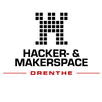
Hackerspace Drenthe
[3.1] Title. Keep it brief.
Who am I?
Rein Velt · software engineer & maker
Code by day, soldering iron by night.
Software Engineer at Dawn Technology
Founder of the Dutch PHP User Group (2001) → PHPBenelux
Founder of Hackerspace Drenthe (Coevorden)
From building a PHP community… to building a maker community
This spring (March–May): Mei MeshCore Maand (MeshCore Month in May) · Drenthenoodnetwerk.nl
This summer: Roboktober → website, PCBs, parts, chassis and organising the event
I'm more of a builder than a talker — so today I'll mostly show you what we built.
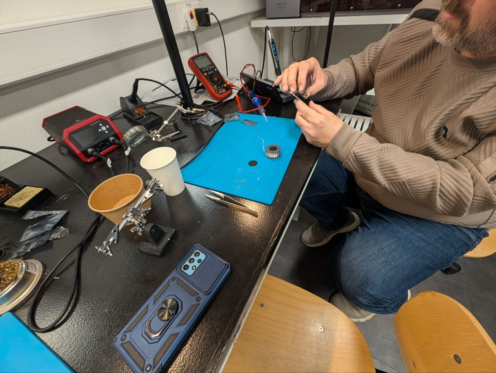
Hackerspace Drenthe, build night
[3.1 · ±1 min] Mention Dawn only as my employer, not as affiliated with Roboktober.
Worked on Mei MeshCore Maand / Drenthenoodnetwerk.nl during March, April and May; then on Roboktober this summer.
Hook: "From the first commit in July to the kickoff in October — I'll come back to that at the end."
Builder, not talker: say it lightly, keep it short, then move on to the content.
Hands up
Who has ever soldered anything?
Who has programmed an Arduino or ESP32?
[3.1] Poll: this determines how much explanation the KiCad section (3.5.4) needs. Remember the ratio.
The thread through this talk
What happens when you push the joystick forward ?
We'll follow it together: from smartphone to motor .
① Phone or remote
WiFi · ESP-NOW
[3.1 · ±3:00] Promise to the audience. Actual WebUI screenshot + actual PCB v4 (KiCad render, underside): ① phone → ② ESP32-C3 → ③ PWM → ④ DRV8833 → ⑤ wheels. Show briefly; revisit in 3.5.1.
THE EVENT
Roboktober
How it started — and what exactly is an antweight?
How it started
Wallie (WallieOnline)
▶ Meet Wallie · 1:24 · in Dutch
Your browser cannot play this video.
Kickoff excerpt · 0:26–1:50 · no subtitles
Has been building antweight robots for many years
Team captain of Team Upstart — including Cookiemonster, TLC and Kecil
🏆 Many awards — including 2nd place at Boeliebots 2026 (Groningen)
Often visits the hackerspace to make robot parts using the milling machine and CNC equipment
The idea: organise an event together → get people excited about technology and the hackerspace
[3.2 · ±2 min] Briefly introduce Wallie, then play the excerpt using the video controls. From the kickoff recording, 0:26–1:50. Available offline; confirm Wallie's permission. The original audio is Dutch, without subtitles; summarise the introduction in English for the audience.
Today · under the hood
Same robot, a new perspective
At the build nights
Build and experiment together
Children, families and makers
Get something moving quickly
Today, as developers
What happens between input and motion?
Interfaces, code and schematics Which software skills transfer?
So today: code · PCBs · schematics
No electronics knowledge needed. Ask if I skip a step.
[3.3 · ±20 s] Not a difference in ability, but a different perspective. Explain new hardware concepts using familiar software principles.
The event
Roboktober
A month of building, testing and robot action — Hackerspace Drenthe + WallieOnline . Solo or as a team: children, families, colleagues.
When What 7 Oct Kickoff: live demo, try driving, start building (livestream ) 14 Oct Antweight building workshop 21 Oct Finish building and test 28 Oct Technical inspection + Battle Day
3D printers, laser cutters and guidance at the hackerspace.
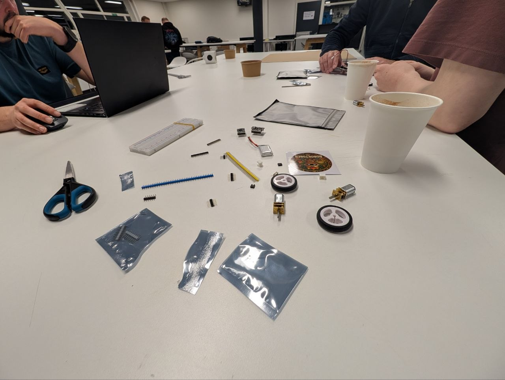
Build night at the hackerspace
[3.3 · ±1 min] Keep it brief. Save the numbers for the retrospective (3.9). No more than 2 minutes including the perspective slide.
What is an antweight?
150 g
maximum weight, everything included
~€25 per kit
15 cm max. 15×15×15 cm
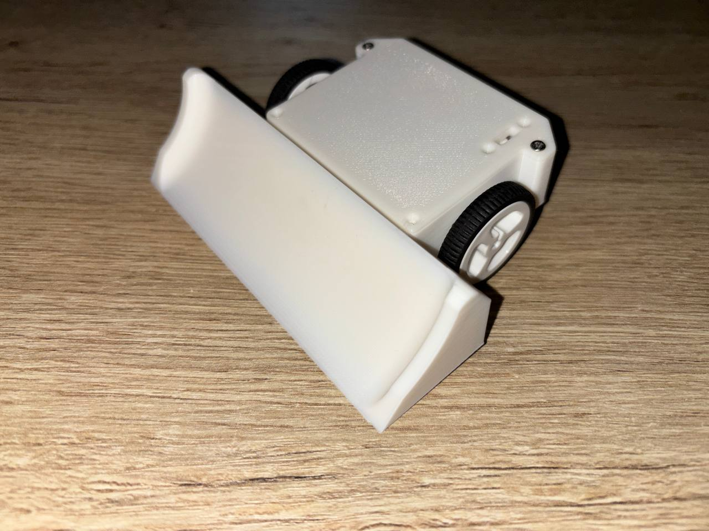
Small, affordable, relatively safe, quick results
[3.4 · ±1 min] Why antweight: affordable, small, relatively safe; get something driving quickly.
Maximum size: fits inside a 15×15×15 cm cube.
Our class & safety limits
Our robot
Antweight — maximum 150 g Battery and electronics count too
At Roboktober: push, don't destroy
Other events: check their own rules
Types
Pushers / wedges
Flippers
Spinners
Safety
Open arena → no active weapons at Roboktober 2026 (pushers/wedges only)Active weapons require suitable containment, rules and inspection
Inspection · failsafe
Safety isn't just in the arena — it's in the code too. We'll see how.
[3.4 · ±1 min] Explain only our class. An enclosed arena alone does not authorise active weapons.
THE ROBOT
Follow one command
From thumb on screen to wheel on floor
[3.5 · start of the core section, 27 min] First open the actual robot on the table and point out its parts, then follow the command route on the same overview slide. Next: controller → firmware with PWM/H-bridge and failsafe → PCB → chassis.
The robot opened up · what goes where? From parts to movement · follow one command
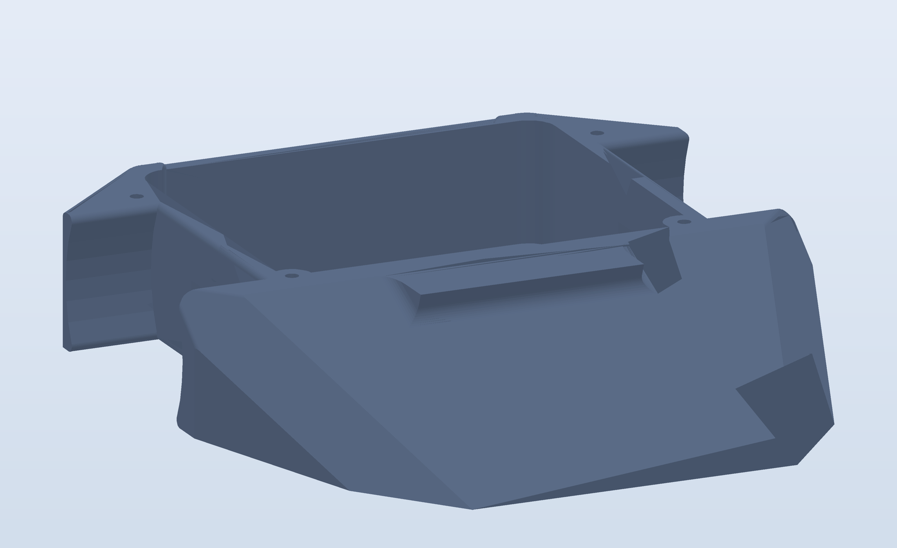
3D render · chassis without electronics 1 / 7 · THE BODY
Chassis Holds all the parts in place.
Space for the battery, PCB and drivetrain. You can design and 3D-print it yourself.
Schematic render · 1S LiPo 2 / 7 · THE ENERGY
Battery Supplies the robot's energy.
1S LiPo: 3.7 V nominal, 4.2 V fully charged. Motor current comes from here, not from the ESP32.
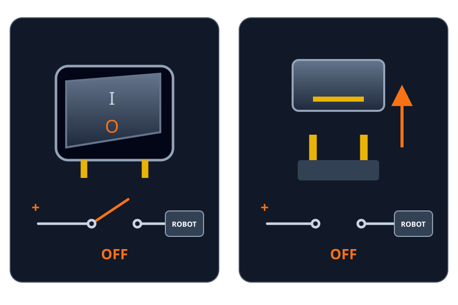
Schematic · switch OR removable link plug/jumper cap · both off 3 / 7 · PHYSICAL POWER DISCONNECT
On/off Switch or removable link plug/jumper cap.
Physically disconnects battery power. Accessible from outside and rated for the motor current.
Stopping motors in software is not the same as switching power off.
KiCad 3D render · bare PCB v4 4 / 7 · THE CONNECTIONS
Circuit board · PCB Connects the parts with copper traces.
Connections for power, ESP32, motor driver and motors. The circuit board itself does not run code.
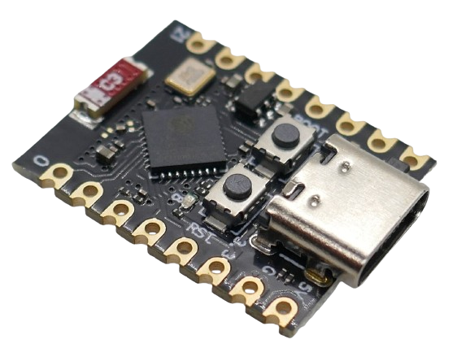
Photo: Tobias Weltner · done.land CC BY-ND 4.0 · unchanged 5 / 7 · THE BRAIN
ESP32-C3 SuperMini Our firmware runs here.
Receives wireless commands, processes throttle and steering, and sends control signals to the motor driver.
Product photo: AliExpress · supplied source 6 / 7 · MOTOR CONTROL
Motor driver DRV8833: between ESP32 and motors.
Switches battery voltage to two motors. The ESP32 decides what should happen; the driver switches the motor current.
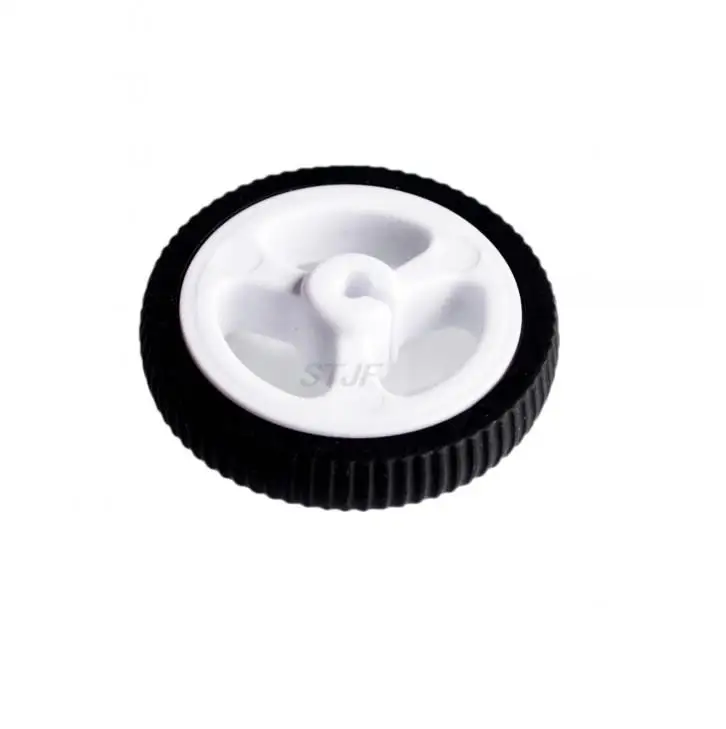
Product photos: AliExpress · N20 motor (cropped) · wheel 7 / 7 · THE MOVEMENT
Motors + wheels Two N20 motors drive the wheels.
Controlling left and right independently makes the robot drive and steer.
Now what happens when you push forward?
1S LiPo
3.7–4.2 V
N20 N20 ESP32-C3
DRV8833
📶 throttle + steering
GPIO6
GPIO10
PWM ≈ 78 %
ON/OFF
⚡ 3.7 V
on / off
PCB v4, underside · battery, motors and wheels shown schematically · chassis not shown
📶 Signal arrives ESP32-C3 receives throttle + steering 🧠 ESP controls motor command 200 → PWM ≈ 78 % 🔋 Battery supplies power 1S LiPo → DRV8833 ⚡ DRV8833 switches switches battery voltage to the motors 🛞 Wheels turn equal commands on both sides → (roughly) straight ahead
[3.5.1 · 2 min total] Open the actual robot on the table with its power switched off. Start with the chassis, then click 6×: battery → on/off → bare PCB → ESP32 → motor driver → motors/wheels. One purpose per step, about 60 seconds in total. The switch or removable link plug/jumper cap physically interrupts power, in series with the battery, never across its terminals. Use a component rated for the motor current and follow the event rules. This is not a software failsafe; disconnect USB or other power sources before working on the robot. Explicitly distinguish PCB from ESP32: copper traces connect parts; the microcontroller runs code. The ESP32-C3 SuperMini is a real, unchanged photo by Tobias Weltner (done.land, CC BY-ND 4.0), included locally. DRV8833, N20 motor and wheel are AliExpress product photos supplied by Rein; no open license has been established. The motor photo is cropped to one complete motor; the wheel is shown alongside it. Battery and power disconnect are schematic. No pins, schematics or CAD code yet.
Bridge: "These are the parts. Now what happens when I push forward on my phone?" The next click shows the overview with the first command step. Then click 4× until the wheels turn. This slide has 11 clicks in total; stepping backwards visits every stage in reverse order.
Overview, no need to memorise pins yet. Worked example for the rest of the talk: AFTER scaling, throttle 200, steering 0 → left 200, right 200 → approximately 78% duty cycle.
Joystick values in the RC protocol and motor commands use different scales. Explain the conversion at the receiver.
The ESP supplies control signals; the battery supplies motor current through the DRV8833.
All lines are actual copper traces from KiCad (pads/tracks mapped onto the render, ±1 px).
Bright blue = GPIO6 + GPIO10 (PWM), dim blue = GPIO7 + GPIO9 (held at 0). Red = battery → on/off switch → around the board edge → DRV8833 VM.
Yellow = motor outputs M1A/M1B and M2A/M2B to the JST connectors. Failsafe: no packet for 500 ms → everything 0.
STEP 1 · REMOTE CONTROL · 5 MIN
The controller
How does a touch on your screen become a command?
[3.5.2 start] Familiar territory: phone, browser, WiFi.
Two controllers, one goal
📱 Phone (WebUI) The robot creates its own WiFi network Browser, no app WebSocket 🎮 Dedicated remote Second ESP32 + analogue stick → ESP-NOW Or a regular RC transmitter + receiver → CPPM Two separate routes, same result
Both deliver the same thing: throttle + steering
Start with the phone; for the code, we'll then use the public ESP-NOW version.
[3.5.2 · 0–1.5 min] Two ways to drive: with your phone or with a home-built remote.
WebUI · the robot as a WiFi access point
WiFi worc-424242 · password worc1234
Open http://192.168.4.1 in your browser
No app, router or transmitter needed
WebSocket: one open connection, rather than reconnecting → low latencyChoose: joystick or tank (two sliders)
Mix throttle and steering, reverse direction: change settings, not code
Wallie's new firmware: release on 5 November 2026 — today · Wallie's GitHub
Just like your home router's settings page.
[3.5.2 · 1.5–3 min] No code on this slide: this is the WebUI overview. Wallie has announced his new firmware release for 5 November 2026, the day of this presentation. Link to his GitHub profile; check on the day whether the release is available.
Same mixing/motor code as the ESP-NOW firmware, just a different transport.
Dedicated remote · ESP32 → ESP-NOW
One shared format — the same structure in both programs:
typedef struct rc_data_t {
uint16_t gAIL, gELE, gTHR, gRUD, gAUX1, gAUX2, gAUX3, gAUX4; // 8 × 2 = 16 bytes
} rc_data_t;
rc_data_t gEspn;
① Transmitter fills and sends it (every 20 ms)
// Abridged: fill the channels, then send.
if (gStick[AIL]) gEspn.gAIL = gStick[AIL]; // steering
if (gStick[ELE]) gEspn.gELE = gStick[ELE]; // throttle
// … other channels …
esp_now_send(0, (uint8_t *) &gEspn, sizeof(gEspn));
worc-remote-esp32.ino#L221–235
② Receiver checks the length and reads the structure
void OnDataRecv(const uint8_t *mac,
const uint8_t *incomingData, int len) {
if (len == sizeof(gEspn)) {
memcpy(&gEspn, incomingData, sizeof(gEspn));
// … validate and scale channel values …
lastCommandTime = millis();
}
}
worc-esp32c3-drv8833-espnow.ino#L129–150
Like pack()/unpack(): 16 raw bytes. Transmitter and receiver must use exactly the same format .
[3.5.2 · final 2 min] Public ESP-NOW code from here on. The WebUI uses a different transport; mixing and motor code are the same.
The struct is written as 8 separate lines in both repos; condensed to one here. Comments (steering/throttle, values) are mine.
Click 1: transmitter (fill gEspn → esp_now_send). Click 2: receiver (memcpy back into the same struct). Click 3: conclusion.
For PHP developers: like pack()/unpack() with the same format at both ends — different structs = nonsense values.
PHYSICAL MOMENT: pass the remote around.
STEPS 2–4 · FIRMWARE AND MOTOR CONTROL · 12 MIN
The firmware
From an incoming message to a turning motor
Flashing from the browser
Web flasher (Web Serial): plug in USB, press a button, doneNo toolchain, no Arduino IDE
Chromium browsers only
Pitfalls: charge-only USB cable , missing driver
From browser to chip Browser → USB → ESP32
Web Serial gives the browser access to the serial connection.
Inspiration: wallieonline.nl/blogs/worc-robot-controller-nl.html
A firmware update like your printer or router — but through the browser.
The software is now on the chip. What does it do with a command?
[3.5.3 start] First: how does the firmware get onto the chip? Then: what does it contain?
The complete firmware · ESP-NOW + DRV8833
1 / 9 · L19–30
Which hardware are we using?
What: load libraries and name connection pins.
Why: connect software to the right hardware.
For the robot: IN2A_OUT_PIN means GPIO 6. It is a connection number, not a speed.
2 / 9 · L32–50
A fixed message format
What: eight 16-bit channels form one 16-byte message.
Why: sender and receiver share the same format.
For the robot: gELE is throttle, gAIL steering. The limits and deadband determine how these values will be converted.
3 / 9 · L51–73
Memory between messages
What: store driving commands, settings and a timestamp.
Why: keep values available between messages.
For the robot: throttle and steering start at 0. lastCommandTime and the 500 ms limit enable the timeout later.
4 / 9 · L152–167
Prepare once at startup
What: load settings and configure PWM: 5 kHz, 8 bit.
Why: prepare motor outputs once at startup.
For the robot: the driver is held in standby during startup, then enabled after two seconds. Motor commands are still 0.
5 / 9 · L170–189
Listen to the remote
What: start ESP-NOW and register OnDataRecv.
Why: process incoming messages automatically.
For the robot: the remote must use the same radio channel. If ESP-NOW fails to start, the code logs the error and restarts the ESP32.
6 / 9 · L129–150
Bytes become driving commands
What: check message length, scale channels and apply deadband.
Why: convert joystick values without creeping near neutral.
Caution: an out-of-range channel keeps its previous value. Every correctly sized message refreshes the timeout here, even in that case.
7 / 9 · L93–105
Two wheels from one joystick
What: mixing: left = throttle + steering, right = throttle − steering.
Why: different wheel outputs turn the robot.
Example after scaling: throttle 200 + steering 100 → left 255, right 100. Inversion settings then correct motor direction.
8 / 9 · L106–127
Numbers become control signals
What: ledcWrite(channel, value) sets PWM through the Arduino-ESP32 core, not a custom function.
Why: turn motor commands into electrical control signals.
LEDC = LED Control, also usable for motors. Value 200 ≈ 78% on-time, not 78% speed. Motor current comes from the battery.
9 / 9 · L191–205
Keep driving — or stop
What: keep updating motors; after >500 ms silence, throttle/steering become 0.
Why: stop when the connection drops.
For the robot: every iteration calls updateMotors(), including for the stop command. This is a software failsafe, not a physical power disconnect.
→ next block · ← back · scroll for all code
© 2026 wallieonline · complete source · fb3afa886117 · GPL-3.0-or-later
[3.5.3 · ±2 min within the existing 12 min] Complete, unchanged public firmware; not WebUI code or a new compilation example. Each click shows an explanation beside the code: what, why, and effect on the robot. Use this overview to keep the following detail slides shorter.
Start at libraries/pins. Eight clicks: message/limits → state → setup PWM → radio/callback → receipt → mixing → direction/PWM → loop/failsafe.
All 205 source lines are in the code window, including the license and EEPROM functions; scroll to explore outside the highlighted blocks.
Source order is unchanged; jump between functions to follow execution. setup runs once, receipt uses a callback, loop runs repeatedly.
Do not read every line aloud. Highlight the receipt limitation: length checking is not full validation; an out-of-range channel retains its previous value, while every correctly sized message refreshes lastCommandTime. This describes the existing source, not a firmware change.
ledcWrite is a library function from the Arduino-ESP32 core, declared in esp32-hal-ledc.h and implemented in esp32-hal-ledc.c. LEDC means LED Control: the PWM hardware can also control motors. This original code uses the core 2.x channel API; core 3.x uses ledcWriteChannel for channels and ledcWrite for pins. Keep the original function name.
Scaling + deadband · calm around the centre
if (gEspn.gELE > unThrottleMin && gEspn.gELE < unThrottleMax) {
gThrottle = map(gEspn.gELE, unThrottleMin, unThrottleMax, -255, 255);
gThrottle = constrain(gThrottle, -255, 255);
if (abs(gThrottle) <= RC_DEADBAND) {
gThrottle = 0;
}
}
0 −255 −40 +40 +255
Deadband (RC_DEADBAND 40): a resting joystick is never exactly at 0 — there's always some noise and play. Everything from −40 to +40 becomes 0, otherwise the robot creeps away while you do nothing.
OnDataRecv() L129–150
[3.5.3 · ±1 min] RC channel values around 1500 are not the same as motor commands around 0. The configured limits determine the conversion to −255…255.
From now on use throttle 200 and steering 0, AFTER scaling and deadband. The length check was on the previous code slide.
Mixing
gMotorLeft = constrain(gThrottle + gSteering, -255, 255);
gMotorRight = constrain(gThrottle - gSteering, -255, 255);
if (gInvertLeft) gMotorLeft = -gMotorLeft;
if (gInvertRight) gMotorRight = -gMotorRight;
Throttle Steering L R 200 0 200 200 200 100 255 100 0 150 150 −150
updateMotors() L93–105
Steer like a tank or excavator: different left/right speeds = turning.
[3.5.3 · ±2 min] Click per table row: wheels respond to the displayed command; this is an illustration, not an RPM prediction (L = motor A, GPIO6/7 → J6; R = motor B, GPIO9/10 → J5; underside, so mirrored).
Negative = the other pin receives PWM (GPIO9 rather than GPIO10) → the wheel reverses. Then 2 more code steps.
Mixer off = tank mode in the WebUI (one motor per slider).
Invert: motor soldered the wrong way round? Change a setting, not code. Settings are stored in EEPROM.
PWM: a dimmer
if (gMotorLeft > 0) { //DIRECTION_FORWARD
ledcWrite(0, LOW); //IN1A_OUT_PIN
ledcWrite(1, abs(gMotorLeft)); //IN2A_OUT_PIN
} else if (gMotorLeft < 0) { //DIRECTION_REVERSE
ledcWrite(0, abs(gMotorLeft)); //IN1A_OUT_PIN
ledcWrite(1, LOW); //IN2A_OUT_PIN
} else { //DIRECTION_STOP
ledcWrite(0, LOW); //IN1A_OUT_PIN
ledcWrite(1, LOW); //IN2A_OUT_PIN
}
5000 Hz, 8 bit: 0 = off · 200 ≈ 78% on · 255 = always on
ledcWrite() L106–125
[3.5.3 · ±2 min] Very fast on/off switching: "on for x% of the time". Direction = which pin gets PWM: forward GPIO6 (IN2A), reverse GPIO7 (IN1A), stop both 0. Duty cycle is not the same as speed or power; load and motor characteristics matter.
H-bridge: four switches
Forward: A + D closed
Reverse: B + C closed
DRV8833 = two H-bridges in one chip. IN1/IN2 determine which switches are closed.
The H-bridge selects current direction; PWM sets how much of the time the motor is driven.
[3.5.3] Never A + C at the same time: short circuit. That's why the chip handles switching for you.
Failsafe · no command is a state too
if (millis() - lastCommandTime > COMMAND_TIMEOUT) {
gThrottle = 0;
gSteering = 0;
digitalWrite(FLED_OUT_PIN, (millis() / 250) % 2);
}
updateMotors();
500 ms no packet → stop · 🔴 LIVE: remote off
loop() L191–205COMMAND_TIMEOUT = 500
Like a heartbeat timeout: without fresh commands, enter a safe state.
[3.5.3 · final 2 min of the firmware section] What happens when input stops? Packets → wheels turn → > 500 ms of silence → throttle/steering 0 → motors stop.
DEMO (the only failsafe demo): remote off (or phone WiFi off for WebUI) → robot stops, LED blinks.
Test with the wheels lifted! Our v2 also sets nSLEEP LOW (motor driver actually disabled).
IMPLEMENTATION · PCB · 4 MIN
The PCB
The motor turns. How do we connect the parts reliably?
[3.5.4 start] From operation to implementation. PCB ±4 min; pins are an interface, not something to memorise.
Components & power
ESP32-C3 SuperMini — WiFi + ESP-NOWDRV8833 — dual H-bridge2× N20 6 V, 50:1LiPo 1S → on/off → DRV8833; optional 2S via a 5V regulator → ESP_5V_IN⚠ Never bridge VIN → 3.3V
[3.5.4 · 0–1 min] Click 5×: ESP → DRV8833 → motors → battery (red trace = battery → on/off switch → DRV8833) → warning. A bypass to 3.3V is forbidden because it would apply battery voltage to the ESP32. Underside render, so mirrored.
Pin contract · the interface between code and PCB
GPIO Function Firmware 5 DRV8833 nSLEEP STBY_OUT_PIN6 / 7 Left motor IN2/IN1 IN2A / IN1A9 / 10 Right motor IN1/IN2 IN1B / IN2B8 Failsafe-LED FLED_OUT_PIN
You don't need to memorise pin numbers. Schematic and firmware must follow the same contract.
[3.5.4 · ±1 min] Click per row, no register lesson. The corresponding copper trace lights up. If short on time, use just the left motor as an example.
KiCad · one shot
My first ever PCB — and it had to work first time .
150 bare PCBs produced
78×56 mm
Revisions v2 → v3 → v4 before production
v2: prototype · v3: power issues fixed · v4: production version
🔁 Pass around: bare + populated PCB
v4 front 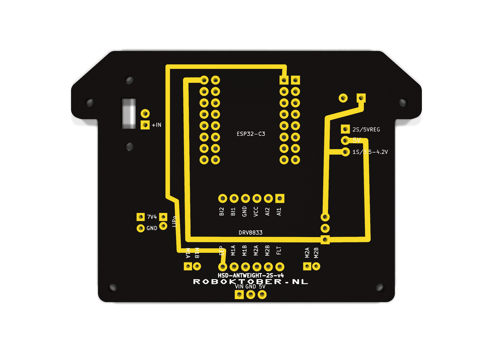
v4 back
Proofread before printing: one mistake becomes 150 copies.
[3.5.4 · ±1 min] The production run made advance checks important. Wallie found power issues; revisions happened before production. Show bare and populated boards.
Validation · automated checks and human review
Plan pin contract in Markdown: which pin → which net Do AI + I update the schematic & layout in KiCad Check check design rules + compare connections with the pin contract Act error? fix it → new revision (v2 → v3 → v4)
1 · Copper clearance
2 · Trace width
3 · Unconnected pads
PCB v4 · illustrative checks, not live KiCad output or measurements
$ kicad-cli pcb drc …
0 DRC violations · 0 unconnected pads
Separate ERC: explain or resolve 3 messages
+ human: check the pin contract, review by Wallie and physical testing
25 of the 30 assembled PCBs work. What a relief.
Failures: ESP32-C3 SuperMini antenna/WiFi issues · assembly errors
Recommended: ESP32-C3 Super Mini Plus V2 with external antenna — same footprint, slightly more expensive.
[3.5.4 · ±1 min] For developers: automated checks like CI. PDCA for each revision.
Click: Plan → Do → copper clearance → trace width → unconnected pads → result/Act → human review → production.
Animated overlays are teaching markers on the PCB, not measured distances or a KiCad recording. The highlighted route is an existing GPIO6 connection.
ERC checks electrical rules in the schematic; DRC checks design rules on the board. Compare with lint/static analysis, not proof that the circuit works.
Also compare connections with the pin contract, get human review and run physical tests. AI review is not a deterministic test.
Be honest: ERC reports 3 messages (unused alternative connector J4_ALT, label REG_5V_OUT) — intentional, but you must be able to explain them.
Wallie provides human review. Pause after "What a relief."
Hardware advice from Rein: this ESP32-C3 SuperMini type is known for antenna/range issues. The recommended replacement is the ESP32-C3 Super Mini Plus V2 with an external antenna: same footprint, slightly more expensive. This is a recommendation for the next build, not an already completed replacement or measured range improvement. Check the supplied variant, pinout and antenna clearance, then test range in the assembled robot.
150 bare PCBs produced (without components); 30 assembled so far, of which 25 work. The 5 failures: some have unusual ESP32s with poor WiFi, others were assembled incorrectly. No design fault found. The comparison: green DRC does not guarantee successful manufacturing and assembly.
HARDWARE · 3D PRINTING · 4 MIN
The chassis
Loose parts aren't a robot yet. What do we put them in?
[3.5.5 · chassis, 4 min total] OpenSCAD: the chassis is a parametric script. About two minutes for the design gallery and lessons; the rest for context, download link and physical variants.
A quick show of hands
Who has designed something in 3D before?
Who knows OpenSCAD?
Who has designed something with it?
[3.5.5 · audience poll · about 20 s, within the chassis section] Ask who has designed something in 3D before and invite a show of hands, regardless of the tool. Click: who knows OpenSCAD? Click: who has designed something with it? Use the responses to pitch the explanation; avoid lengthy stories. Bridge: for programmers who have not used it, a 3D model can be code too.
Why OpenSCAD?
A 3D model as a text file — program it instead of clicking.
Visual CAD design
Draw and edit shapes directly
Can be parametric and automated too
Excellent tools for 3D design
For me: less direct text-based diffs
OpenSCAD
Git diffs : see exactly what changedParameters : pcb_clear = 0.3; → everything adjustsAsserts : check explicit dimensional constraintsAI can read and write it : all designs together, ±9,700 lines of text
$ git diff antweight_chassis.scad
- pcb_clear = 0.2;
+ pcb_clear = 0.3; // PCB fit was too tight
For developers: it's just code — version control, review and tests work here too.
Free and open source · Windows, macOS and Linux · Download: openscad.org/downloads.html
[3.5.5 · chassis] Not a competition between CAD tools: a text model helps my workflow with diffs, review and AI assistance. Asserts guard only the constraints you write down; test prints are still needed.
OpenSCAD · code first
A 3D model is the output of your code.
1. Dimensions, shapes and subtraction
Two clicks. First the building blocks, then the robot designs.
1. Dimensions → shapes → subtraction
Millimetres · [x, y, z] · translate moves · difference subtracts
2. Reuse → import → check
assert(wall > 0, "wall must be positive"); guards a requirement, not physical fit.use <standoffs.scad> loads modules; import() loads STL/3MF or DXF/SVG.
[3.5.5 · code examples · about 2 min] Only code and exact example results first; robot designs follow on the next slide. Click 1: reusable dimensions, basic shapes, translate, union and difference. Click 2: standoffs as a module and loop, importing a DXF profile with linear_extrude and asserts. A module produces geometry, a function returns a value. Parameters are definitions, not imperative variables. Example scripts and the DXF profile are included offline. Asserts do not replace a test print.
Chassis as code · OpenSCAD
One project, many different designs
Now the designs: nine families, versions side by side.
Click to begin →
[3.5.5 · design gallery, about two minutes] 9 clicks, one per design family; all 23 images remain visible within their family. Versions appear side by side with the correct model name and source link. The Nordic Racer series is deliberately omitted here.
Mesh conversions and exports of identical geometry are not additional designs; disc_geometry.scad is a helper library.
Different design lines, not one linear version history. Don't read every detail: name the families and click briskly through the versions.
Renders are not to the same scale; prototype geometry does not prove fit or function.
Code was covered on the previous slide. Here we only compare designs, without code examples. Move briskly; target one minute, up to two minutes for questions.
Rein confirms: Disc Spinner v0.5 (‘Lief Monster’) placed 3rd; Limulus v0.1 placed 4th. Passive Aggressive performed well; the comment about drivers is tongue-in-cheek. Mostly Harmless is my favourite. Active weapons were not allowed; the Disc Spinner design name does not establish its competition configuration.
Same PCB, different chassis
v0.2 basic — "hello world" v0.4 integrated — integrated enclosure 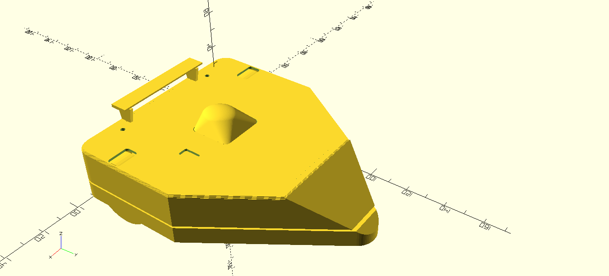
Racer nordic — multicolour design
Shared PCB outline, holes, motor and wheel dimensions → every chassis fits the same board.
A standard interface, like LEGO studs.
[3.5.5 · end of chassis section] PHYSICAL MOMENT: show the printed variants. Don't wait until everything has been passed around.
Wrap up: from command to motion, with safe stopping in the firmware; now everything also fits inside a robot. → audience drives.
AFTER THE TECH
Demo & journey
Try driving — and how did this project come together?
Now you know what happens
Who wants to drive?
[3.5 end · ±36 min] Repeat the route in one sentence: input → processing → PWM → H-bridge → motor. Then put it into practice.
Live demo · you drive
Select your demo robot's WiFi network
Use the password on the card next to the robot
Browser: http://192.168.4.1
Pushing match! 🥊
One driver per robot. Switch only when the robot is stationary.
[3.6 · 4 min] Two robots, one driver per robot. Failsafe already demonstrated: here, just drive and apply what we've learned.
Prepare cards with the actual configured SSID and password; test connections. Bounded driving area, no active weapons.
Detour · the PHP part
roboktober.nl
API-first: Laravel API + Filament admin , Vue 3 + Vite
Build Hub : parts list, 3D files, firmware and build guideThe site as a distribution channel for a physical building project
Same workflow: version control, static analysis and tests
From instructions on the site to building at the table
Website and build files on GitHub github.com/Hackerspace-drenthe/www.roboktober.nl
Not just the final result: the plans, iterations and mistakes too. Fork it, build it, improve it.
ESP-NOW firmware: WallieOnline. WebUI source code is still to follow.
[3.7 · 2 min] Bridge: "Participants needed somewhere to get all these files, firmware and build instructions." Not a second architecture talk. Explicitly distinguish public ESP-NOW firmware from the WebUI source, which is not yet public.
From first commit to kickoff · July–October
2 Jul
web Plan frozen + first Laravel API + Vue commit
Jul–Aug
PCB Design, review and order parts
late Aug
production v4 final — PCBWay sponsorship, 150 boards
Sep–Oct
testing Firmware, chassis and test prints
7 Oct
kickoff From preparation to building together
14–28 Oct
event Build nights, guidance and Battle Day
About three months of preparation until kickoff; then build nights and Battle Day.
[3.8 · 1 min] Source: git history + purchasing docs. About three months from first commit to kickoff, not the entire event. Everything ran in parallel.
Be honest: I had tinkered with electronics before, but never designed a PCB that had to work first time and would be produced 150 times.
How: AI-assisted development
Detailed plangoals + constraints
→
AI implements iteratively
→
Test & validateagainst the plan
→
Adjust it myselfand refine
↺
One plan as the source of truth (PLAN.md + changelog)
Validation per domain: DRC/ERC · PHPStan + tests · test prints · code review
VS Code + GitHub Copilot, with custom instructions
My responsibility Set goals and limits. And the physical work: ordering, soldering, helping participants. Wallie contributed robotics expertise and review.
AI gives one developer a broader reach — if the plan and tests are sound.
[3.8 · 1 min] Optional anecdote: an AI mistake caught by validation.
TO WRAP UP
Closing
How did it go — and how can you get started?
How did it go? · Battle Day, 28 October
30+ visitors · packed house
18 robots initially
12 robots in the competition
Robots during the building phase
Not every robot reached the arena: from 18 to 12
I brought 5 working robots
I lent them to children without a working robot — so everyone could still take part
The shared platform made lending and quick swaps possible
[3.9 · 2 min] Over 30 visitors, a packed house. Initially 18 robots, eventually 12 in the competition. I lent my 5 working robots to children who wanted to battle but had no working robot. Lesson: not every build is ready on time; spare hardware keeps everyone in the game. Don't name a winner unless confirmed. The photo is from the building phase, not Battle Day.
From joystick to wheel — the same software principles
Open software and standards as foundations. Testable requirements as contracts. Code as a tool — for hardware too. Tests as proof — in the real world too.
AI assists at every step. You define, check and validate.
If you can program, you can build robots too.
The same principles. Now it moves.
You're still a developer — only now your bug drives away.
[3.10 · recap] We followed one command from joystick to wheel. The entire chain uses principles you already know as a developer: open software and standards as foundations; testable requirements as contracts; code as a tool, including PCB and chassis design; tests as proof, digitally and physically. AI assists at every step, but you define, check and validate. AI output is not proof. Open foundations does not mean everything is open: ESP-NOW is a vendor protocol. Click: if you can program, you can build robots too. The same principles. Now it moves. Let it land. Click: closing joke.
How do you get started tomorrow?
🧰 Kit Parts list + build guide at roboktober.nl
💾 Firmware WallieOnline on GitHub or the web flasher
🖨️ Chassis Edit a .scad file and print it
Hackerspace Drenthe (Coevorden): come visit!Next Roboktober edition · Boeliebots (Groningen)
roboktober.nl
Hackerspace Drenthe · come visit!
PCBs sponsored by PCBWay
[3.10 · call to action] QR code points to https://roboktober.nl — leave it on screen so people can scan it.
Questions?
The robots keep moving — come and try driving.
[Q&A · 11 min] Keep passing the robots around / driving them.
Get the presentation
Nederlands · English · offline downloads
roboktober.nl/app/presentaties/
[Closing · download link] Leave this slide visible so the audience can scan the QR code. The link opens the presentation index with Dutch, English and complete offline packages. No additional explanation needed.